Indonesia Trav-E-Logs©
| Flores | 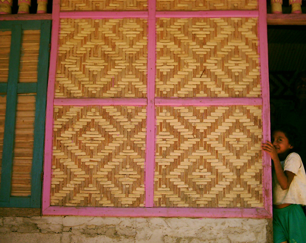 |
| back: Sumba | Future Artist on the Flower island |
================================= Finally made it back to Flores, the island of flowers, and my primary reason for traveling to Indonesia this trip. Only on Flores can one see many designs in the bamboo panels making up the exterior walls of traditional houses and buildings. These are begging to be photographed before this art form is lost to the modern construction techniques of stucco and concrete. =================================
|
August 2 - 8, 2003 The overnight ferry from Waigapu, Sumba arrives at the port of Ende and we start looking for a place to stay, splitting up to make the searching more efficient. The third place is recognize as the Iklas from my 1999/2000 trip. The prices are still reasonable, so we take a couple of singles. Went up to the Wartel office to use the Internet, but found that it was not working. Seems a virus had infected the whole system before it was upgraded to Windows XP and an anti-virus program installed. Spent three hours removing the virus, installing updates and new definitions, and setting up auto updates to prevent this from happening in the future. Ran out of time to check my own email! Dirk and I are interested in each other's plans for Flores, so we head out together with our cameras the next morning. The fish and dry-goods markets, and street stalls are visited while asking lots of questions about bamboo panel construction. Then we follow several leads, taking a long hike out to a village where a gentleman in one house shows us how to split bamboo to make the strips for weaving the panels. Today is Sunday, so panels are not being made. While walking around the area, found not only another village, but discovered a park-like setting with a temple very similar to those seen on Bali. Then back into town for lunch. Dirk heard about a traditional animist village some 12 km out of town, situated on a hillside overlooking the Sabu Sea. We head there by mini-truck after lunch, and really shoot a lot of pictures of this animist culture mixed with Catholicism. (See the lengthy captions below the photos.) The sights along the road intrigued us, so decide to hike back, occasionally along the beach, and through two other villages. Just can't imagine what a day would be like if planned in advance! On Monday Dirk heads across the island to a small village on the North coast, while I return to the panel weavers. Two places that make these panels in their front yard are visited, where stills and simple videos are taken. Everyone has been so helpful and cooperative that I treat them to a big box of cookies. For more on the designs and making of bamboo panels, see the special subject topic "Bamboo Homes in Southeast Asia" While walking down one of the streets on my last day in Ende, it becomes apparent someone is running after me. Turning around apprehensively, it turns out to be I. Nyoman Puja from Bali that had opened up the Warung Bali restaurant. Thanking him profusely for catching me, we talk about his business while his wife fixes a delicious meal. In almost two hours, I'm his only customer. The shop is nicely decorated, but there is little traffic in the area. I sincerely wish him the best of luck. Spend an hour at the Internet Cafe, where they don't even give me a discount for getting them back on line! Then on to more of Flores; Bajawa; Riung; and Ruteng. |
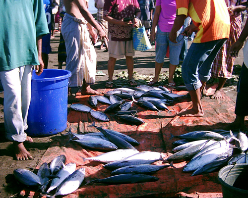 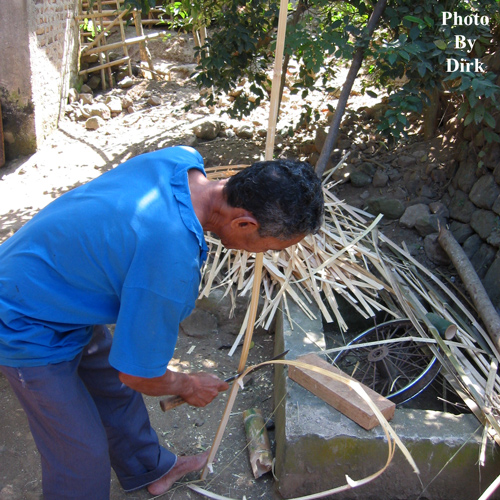 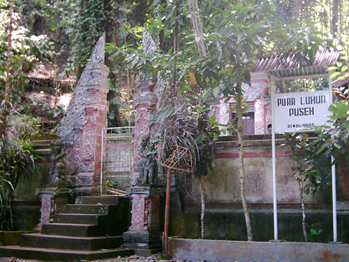 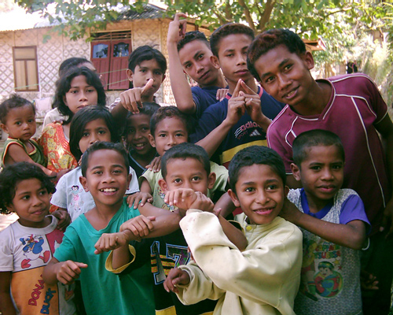 |
| 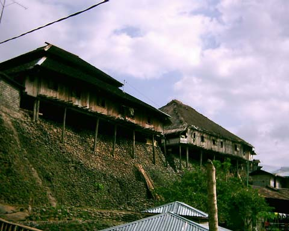 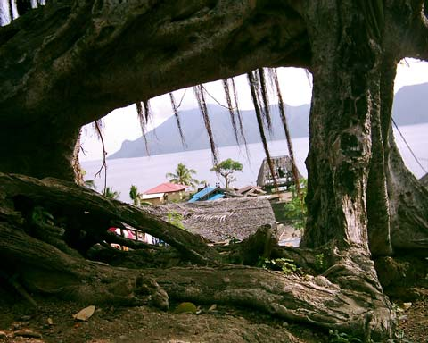 While climbing up the path to the animist village, noted some of the houses were long enough to house several families, a tradition in Borneo. The photo to the right shows a view framed by a tangle of tree roots. Note the heavily deteriorated roof on structure to the right -- it has the carvings mentioned below. |
| 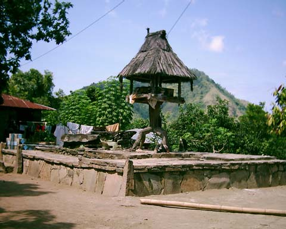 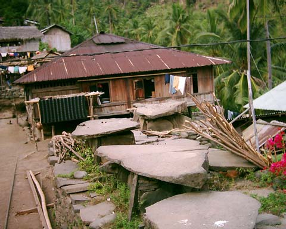 Near the center of the animist village, found several lot-sized areas containing multiple stone slabs that may be burial plots similar to those seen on the island of Sumba. |
| 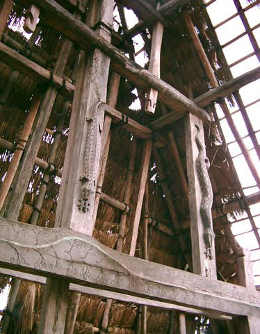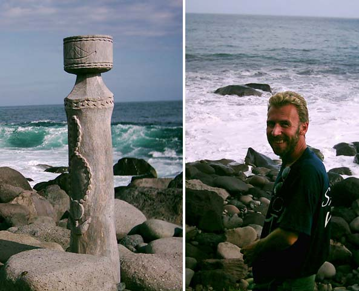 Then on the edge of a hill overlooking the sea, a run-down structure housed some very interesting carvings. The two shown in the photo (above left) are probably of a Komodo Dragon and a Python, both ready to eat small animals. More carvings around town were found, and finally one on the beach as we walked back into town. We suspect the latter is a good luck omen for fishermen. Hi Dirk! |
Enjoy your life -- it's the only one you've got. I certainly am!
Bill
| next: Makasar |
| back: Sumba |